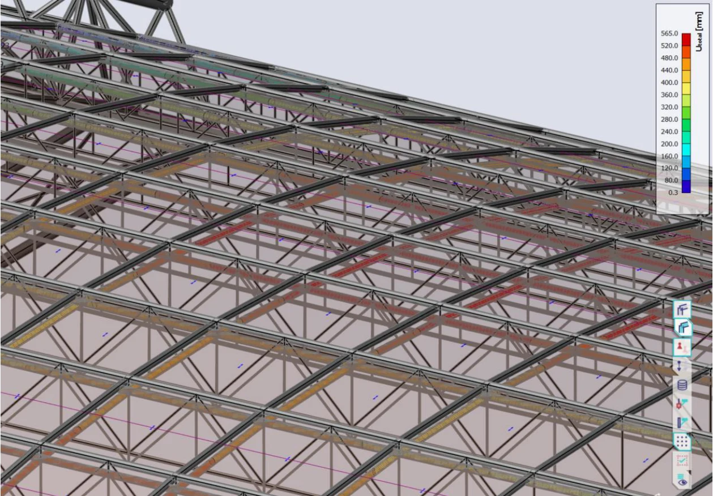
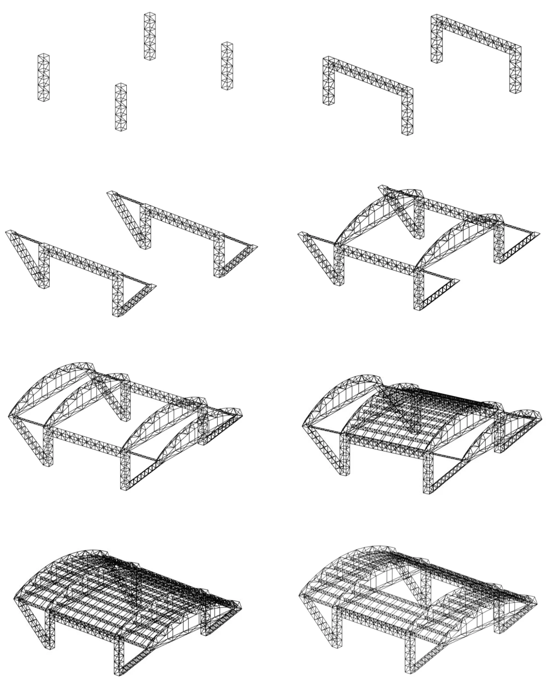
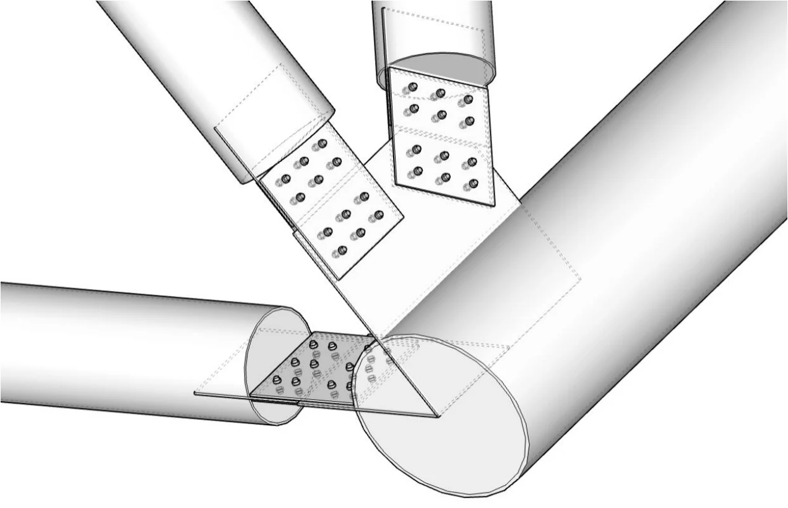

Een dak dat
ruimte geeft.
Retractable roof design for Philips Stadium
7KP2M0
Hoe vertaal je een ruimtelijk idee naar een werkend constructief systeem?
Het Philips Stadion overkappen met een dak dat kan openen en sluiten. De bestaande tribunes, beschikbare steunpunten en het gebruik van het stadion vormen daarbij de context. Het ontwerp vraagt om samenhang tussen een grote overspanning, een beweegbaar dak en de krachten die uiteindelijk bij de fundering terechtkomen.
Keuzes zichtbaar maken.
In mijn ontwerp vergelijk ik verschillende varianten en werk ik de gekozen oplossing stapsgewijs uit. Mechanische schema’s en eerste afmetingen vormen de verbinding tussen het concept en de verdere analyse met SCIA Engineer. Ook het schuifsysteem, de detaillering en de montagevolgorde komen aan bod.
De hoofdconstructie combineert bogen, vakwerken en stabiliteitselementen. Bij zo’n systeem heeft de plaats van een aansluiting invloed op het gedrag van het geheel: een excentrische belasting kan bijvoorbeeld torsie in de boog veroorzaken.


Van krachtsafdracht naar knooppunt.
Dit detail uit appendix G laat zien hoe verschillende buisprofielen op een knooppunt samenkomen. De tekening toont aansluitplaten aan de buisuiteinden en boutverbindingen met de platen bij de doorgaande buis.

Voor het handbook is dit een concrete verbinding tussen het mechanische schema en de uitwerking: waar komt de staafkracht aan, via welke onderdelen gaat die verder, en hoe past de aansluiting bij de aangenomen werking van het knooppunt? De afbeelding toont de ontwerpuitwerking; een detailtoets vraagt daarnaast om een afzonderlijke onderbouwing van de platen, bouten en aansluitingen.
Wat dit project laat zien.
Het verslag benoemt ook openstaande aandachtspunten, waaronder de horizontale funderingsreacties en de totale bouwhoogte. Dat is een waardevolle les voor het handbook: controleer ontwerpkeuzes steeds opnieuw aan de oorspronkelijke randvoorwaarden, ook wanneer een oplossing gunstig is voor het materiaalgebruik.
Van projectervaring naar uitleg.
Maak de tussenstappen zichtbaar. Een student heeft niet alleen een eindberekening nodig, maar ook de redenering van ontwerpvariant naar mechanisch model, afmetingen en controle.
Bekijk het interactieve concept →Het volledige verslag.
Bekijk de oorspronkelijke onderbouwing, berekeningen en tekeningen.